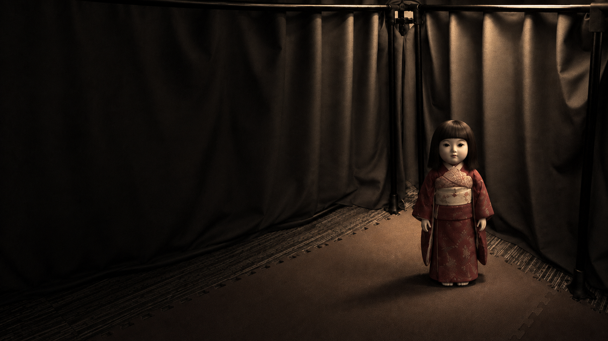

スタッフをお呼びください Please call a member of staff. Veuillez appeler un membre du personnel.

スタッフ確認モードです。クエストへ設定は送りません。
タブレットをスタッフにお渡しください Please hand the tablet to a member of staff. Veuillez remettre la tablette à un membre du personnel.
クエスト … 確認しています
いまやること
本体のラベル（α または β）を見て選んでください。
タブレットを充電して横向きに置きます。「廻リ視 博士」を開いたままにしてください。
声が聞こえるか確認してください。音量はタブレット本体のボタンで調整します。
別の受付と設定が混ざったときに使います。取り消すと装着前の確認も無効になります。来場者が言語とホラー軽減を選び直します。